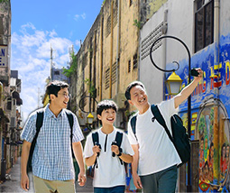
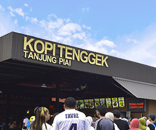

Discover Your Unfold Beauty In Pontian
Stroll through lush mangroves, breathe in crisp sea air, and savor local delights rich in tradition. In Pontian, every moment invites you to slow down, embrace nature, and enjoy life's simple joys.
Pontian
Nestled along Johor's coastline, Pontian is a captivating destination where nature, culture, and history intertwine. Wander through mangrove forests teeming with wildlife, explore traditional fishing villages, and immerse yourself in the town's heritage. From vibrant murals telling stories of the past to the aroma of freshly brewed coffee, every corner of Pontian has a tale to share. Whether you're savoring authentic flavors, gazing at coastal sunsets, or discovering hidden gems, Pontian offers a perfect escape—where tranquility meets tradition, and every journey feels like home.
A Journey Through Pontian's Landmarks
-
- Tanjung Piai National Park
Stand at the southernmost tip of mainland Asia and walk through lush mangrove forests.
Explore
-

- Pontian Mural Street
A walk through vibrant street art that tells the story of Pontian's people and culture.
Explore
-

- Kopi Tenggek Tanjung Piai
Taste locally brewed coffee with a unique brewing method enhances its bold flavors.
Explore
Pontian Travel Guide
Nestled along Johor's coastline, Pontian is a gem where nature meets culture. Explore mangroves, wander floating villages, and experience heritage. Enjoy traditional coffee or coastal scenery—Pontian blends tranquility and tradition.
-
Your Travel Timeline
Not sure where to start? Let us guide you through a well-planned timeline for a smooth and enjoyable trip. Whether it's a one-day or two-day adventure, explore Pontian's best spots at your own pace.
More
-
Travel Must-Haves
Make the most of your journey with the right essentials! From comfortable clothing to must-bring gear for nature walks, check out our detailed list to stay fully prepared for an effortless.
More
Uncover the Heart of Pontian!
Pontian is more than just a stop—it's a journey of discovery. From charming heritage spots to nature's hidden gems, this coastal town is bursting with experiences waiting to be explored. Indulge in comforting local delights, capture postcard-worthy moments, and create memories that will last a lifetime.